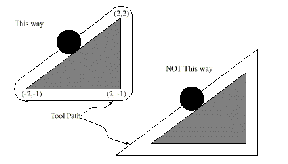

The cutter radius compensation capabilities of the interpreter enable the programmer to specify that a cutter should travel to the right or left of an open or closed contour in the XY-plane composed of arcs of circles and straight line segments. The contour may be the outline of material not to be machined away, or it may be a tool path to be followed by an exactly sized tool. This figure shows two examples of the path of a tool cutting using cutter radius compensation so that it leaves a triangle of material remaining.
|
In both examples, the shaded triangle represents material which should
remain after cutting, and the line outside the shaded triangle represents
the path of the tip of a cutting tool. Both paths will leave the shaded
triangle uncut. The one on the left (with rounded corners) is the
path the interpreter will generate. In the method on the right (the
one not used), the tool does not stay in contact with the shaded triangle
at sharp corners.
|
|

|
Z axis motion may take place while the contour is being followed in the XY plane. Portions of the contour may be skipped by retracting the Z axis above the part, following the contour to the next point at which machining should be done, and re-extending the Z-axis. These skip motions may be performed at feed rate (G1) or at traverse rate (G0). Inverse time feed rate (G93) or units per minute feed rate (G94) may be used with cutter radius compensation. Under G94, the feed rate will apply to the actual path of the cutter tip, not to the programmed contour.